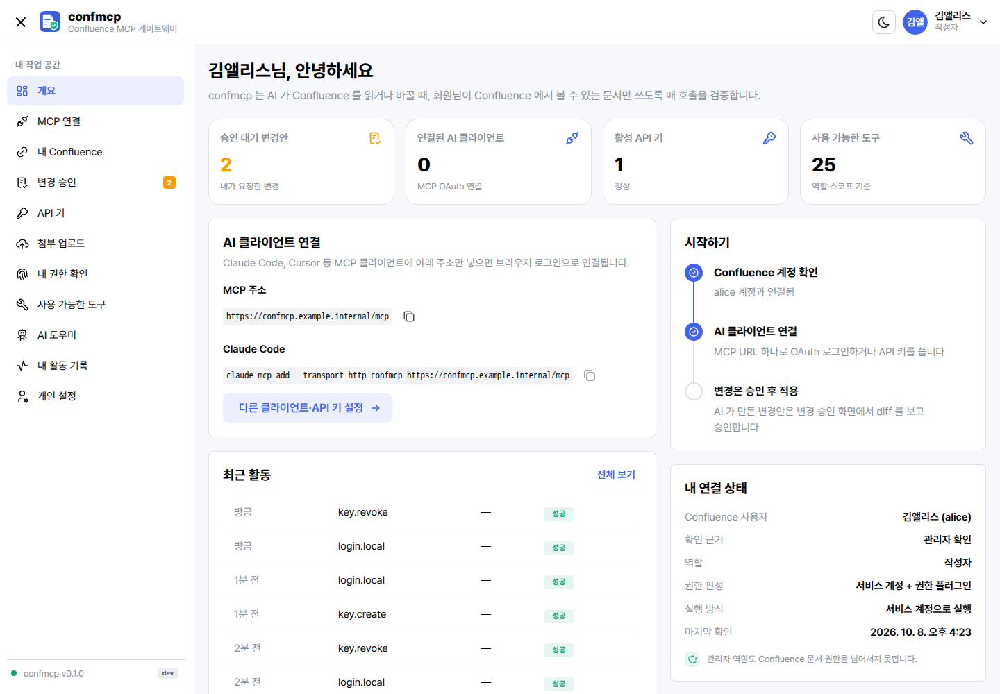
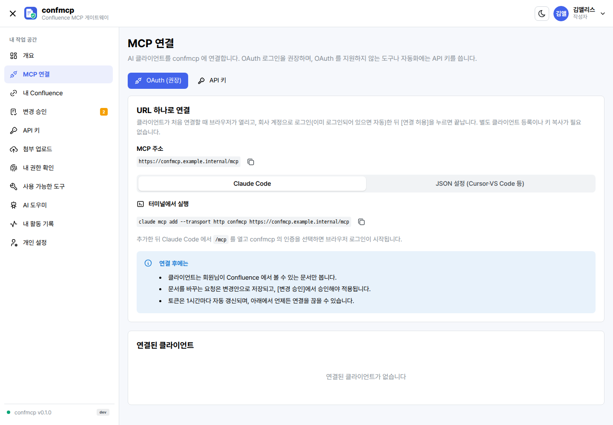
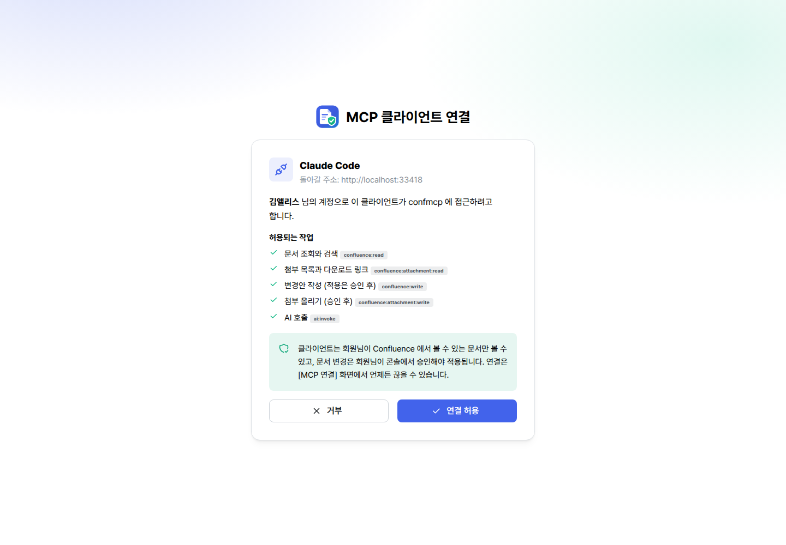
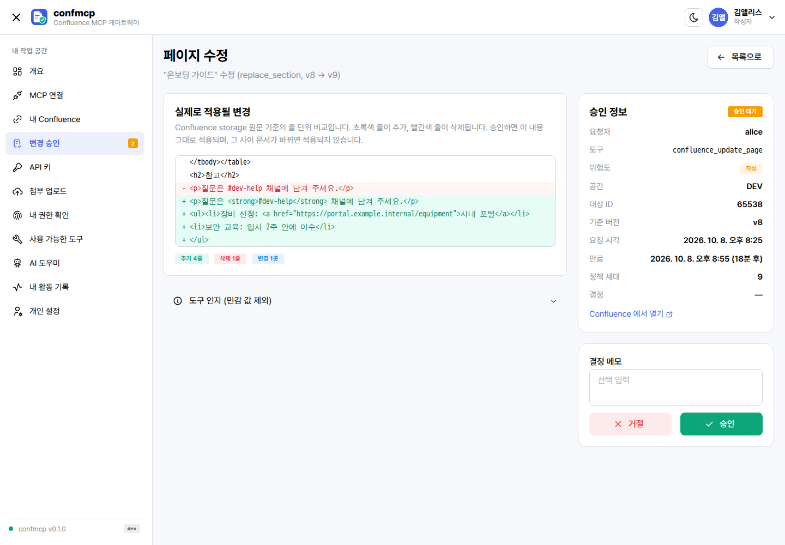
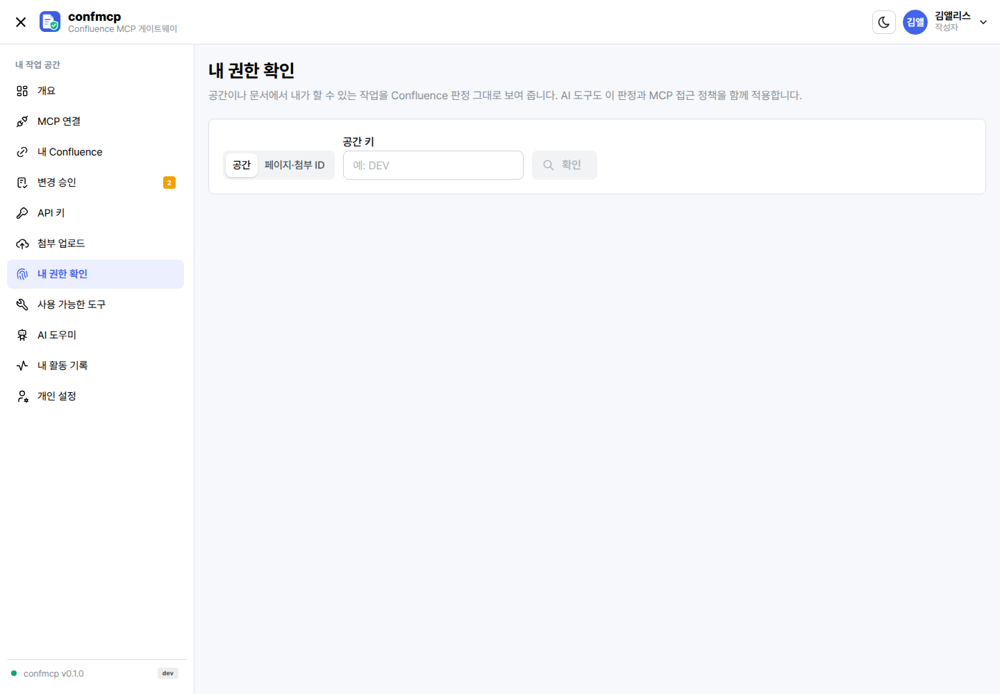
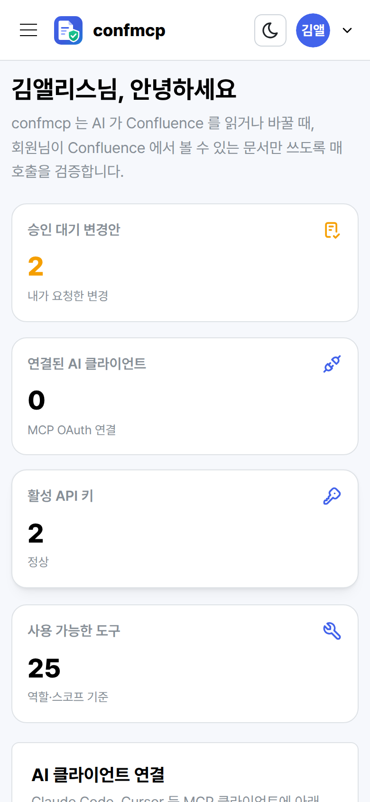
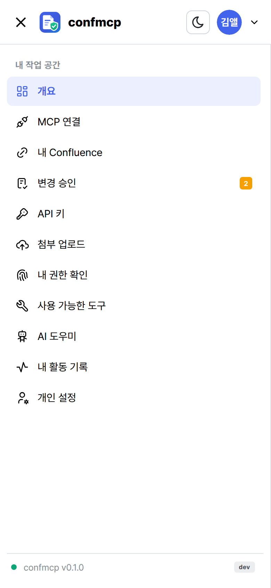

서비스 계정을 그대로 쓰면
- 인사·보안 공간처럼 열람이 제한된 문서가 검색 결과와 요약에 섞여 나옵니다.
- 상위 페이지의 열람 제한이 하위로 상속된다는 Confluence 규칙이 무시됩니다.
- AI 가 고친 내용이 검토 없이 바로 반영되고, 작성자는 서비스 계정으로만 남습니다.
- 누가 무엇을 요청했는지 Confluence 기록만으로는 알 수 없습니다.

Confluence Server 7.2.0 용 MCP 게이트웨이
AI 는 내가 볼 수 있는 Confluence 문서만
AI 클라이언트가 Confluence 를 읽고 쓰더라도, 매 호출마다 요청한 사람 본인의 Confluence 권한을 확인합니다. 문서 변경은 사람이 diff 를 보고 승인해야 적용됩니다.

confmcp 는 Confluence Server 7.2.0 앞에 두는 MCP(Model Context Protocol) 게이트웨이입니다. Claude Code 같은 AI 클라이언트가 MCP 로 문서를 검색·조회·작성할 때, Keycloak 으로 사용자를 인증하고 요청자 본인의 Confluence 유효 권한을 작업별(열람·작성·편집·댓글·첨부·이동·삭제)로 판정한 뒤에만 Confluence 에 접근합니다. 판정할 수 없으면 거부하고, 문서 변경은 콘솔에서 diff 를 확인해 승인해야 반영되며, 모든 호출은 요청자와 실제 실행 계정을 나눠 감사 기록에 남깁니다. Go 와 React 로 만든 도커 이미지 하나로, 환경변수 네 개만 넣어 오프라인망에 배포합니다.
가장 쉬운 방법은 AI 에 서비스 계정 하나를 붙이는 것입니다. 그러면 AI 를 쓰는 모든 사람이 그 서비스 계정의 눈으로 Confluence 를 보게 됩니다.
호출 하나가 허용되려면 아래 다섯 조건을 모두 만족해야 합니다. 어느 하나라도 확인할 수 없으면 거부합니다.
최종 허용 = 요청자의 Confluence 유효 권한
∩ MCP 접근 정책 (공간 · 페이지 트리 · 콘텐츠 유형)
∩ 호출자 역할 · 스코프
∩ 필요한 승인
∩ 실행 자격증명의 실제 권한
접근 정책과 역할은 권한을 줄이기만 합니다. 관리자 역할도 Confluence 문서 권한을 우회하지 않습니다.
권한 판정, 변경 승인, 원문 보존, 연결, 운영까지 Confluence 를 AI 에 안전하게 여는 데 필요한 것을 한 서비스에 담았습니다.
매 호출마다 요청자 본인의 Confluence 유효 권한을 작업별로 판정합니다. 볼 수 없는 문서는 검색·하위 목록·건수에서 빠지고, "없음"과 "권한 없음"은 같은 응답으로 돌려줘 존재 여부도 드러나지 않습니다.
AI 의 쓰기 요청은 변경안으로 저장되고, 콘솔에서 storage 원문 기준 diff 를 보고 승인해야 적용됩니다. 승인은 인자·문서 버전·원문 해시·정책 세대에 묶여 하나라도 바뀌면 무효가 되고, 한 번만 실행된 뒤 다시 조회해 결과를 검증합니다.
문서를 Markdown 으로 바꿔 덮어쓰지 않습니다. 추가·텍스트 치환·구역 교체로 storage 원문을 그대로 두고, 매크로·레이아웃·멘션·첨부 참조가 사라지는 변경은 거부합니다. 읽을 때 매크로는 실행하지 않습니다.
confmcp 가 직접 OAuth 2.1 인가 서버가 됩니다. 동적 클라이언트 등록, PKCE, 리소스 바인딩, refresh 토큰 회전을 지원해 클라이언트에 /mcp 주소만 넣으면 브라우저 로그인과 동의 한 번으로 연결됩니다.
OIDC Authorization Code + PKCE 로 로그인합니다. Keycloak 세션이 있으면 prompt=none 사일런트 SSO 로 로그인 화면 없이 들어옵니다. Keycloak 에는 클라이언트 하나와 역할 네 개만 만들면 됩니다.
개인 API 키를 발급(전체 값은 한 번만 표시)·회전(유예 시간)·폐기합니다. 역할 → 스코프 체계를 콘솔에서 바꿀 수 있고, 키 권한은 매 호출마다 소유자의 현재 역할로 다시 평가합니다.
로그인, 도구 호출, 쓰기, 거부, 승인, 설정 변경을 모두 기록합니다. 요청자와 실제 실행 계정을 따로 남기고 토큰·본문은 기록하지 않습니다. 대시보드에서 호출량·오류율·p95 지연을, /metrics 로 지표를 봅니다.
웹 콘솔·글꼴·마이그레이션이 든 도커 이미지 하나와 환경변수 네 개로 끝납니다. Keycloak·Confluence·정책·AI 설정은 모두 콘솔에서 입력하고, 비밀값은 AES-256-GCM 으로 암호화해 PostgreSQL 에 저장합니다.
콘솔의 AI 도우미는 Anthropic 또는 OpenAI 호환 API(사내 게이트웨이 포함)를 쓰며 기본으로 SSE 스트리밍합니다. 최대 출력 토큰은 524,288 까지, 사용자는 관리자가 허용한 모델 목록에서 고릅니다.
MCP 클라이언트의 도구 호출은 confmcp 안에서 아래 순서로 검사되고, 모두 통과해야 Confluence 로 전달됩니다.
Claude Code 등. Streamable HTTP 로 /mcp 를 호출하고 confmcp OAuth 토큰 또는 개인 API 키를 보냅니다.
REST API 는 서비스 계정(HTTPS Basic) 또는 요청자 본인 자격증명으로 호출합니다. 권한 플러그인은 서명된 요청에만 판정 결과를 돌려줍니다.
도구 결과에는 출처(문서 ID·URL·버전)와 "trust": "untrusted" 표시가 붙어, 모델이 문서 내용을 지시가 아닌 데이터로 다루게 합니다.
사용자용 "내 작업 공간"과 관리자용 "서비스 관리" 메뉴가 한 콘솔에 있습니다. 밝은·어두운 테마와 모바일 화면을 지원합니다.








MCP OAuth 를 지원하는 클라이언트는 주소 하나만 넣습니다. 처음 연결할 때 브라우저가 열리고, 회사 계정으로 로그인(SSO 세션이 있으면 자동)한 뒤 연결을 허용하면 끝납니다.
claude mcp add --transport http confmcp https://confmcp.example.internal/mcp{
"mcpServers": {
"confmcp": { "type": "http", "url": "https://confmcp.example.internal/mcp" }
}
}{
"mcpServers": {
"confmcp": {
"type": "http",
"url": "https://confmcp.example.internal/mcp",
"headers": { "Authorization": "Bearer confmcp_xxx_yyy" }
}
}
}자세한 OAuth 단계와 키 관리는 사용자 가이드의 MCP 연결을 보십시오.
모두 28종입니다. 관리자는 도구별로 사용 여부, 승인 필요 여부, 최소 역할을 바꿀 수 있습니다.
confluence_me confluence_my_permissions confluence_spaces confluence_get_space confluence_pages confluence_get_page confluence_children confluence_ancestors confluence_search confluence_comments confluence_attachments confluence_labels confluence_blogposts confluence_get_blogpost confluence_recent_changes confluence_page_context confluence_space_context
confluence_prepare_change confluence_create_page confluence_update_page confluence_add_comment confluence_add_labels confluence_upload_attachment confluence_download_attachment
쓰기 도구는 기본으로 승인이 필요합니다.
confluence_create_blogpost confluence_remove_labels confluence_move_page confluence_trash_page
기본 비활성입니다. 이동·휴지통은 승인을 끌 수 없고 요청자가 아닌 별도 승인자가 승인합니다. 영구 삭제 도구는 없습니다.
도구별 설명·위험도·필요 권한은 사용 가능한 도구 표에 정리했습니다.
confmcp 는 Confluence Server 7.2.0 앞에 두는 MCP 게이트웨이입니다. AI 클라이언트가 MCP 로 Confluence 를 읽고 쓸 때 Keycloak 으로 인증된 요청자 본인의 Confluence 권한을 매 호출마다 확인하고, 문서 변경은 사람이 콘솔에서 diff 를 보고 승인한 뒤에만 적용합니다.
권한 플러그인 모드에서는 REST 호출만 서비스 계정으로 하고, 무엇을 볼 수 있고 바꿀 수 있는지는 Confluence 안에 설치한 confmcp 권한 플러그인이 요청자의 userKey 로 Confluence 자체 권한 엔진에 물어 판정합니다. 열람 제한 상속, 편집 제한 비상속, 그룹 권한이 Confluence 화면과 같게 적용됩니다. 판정할 수 없으면 호출을 거부합니다.
네. 사용자 위임 모드에서는 사용자가 콘솔의 내 Confluence 화면에서 본인 Confluence 자격증명을 연결하고, 모든 호출이 그 자격증명으로 실행되어 Confluence 가 직접 권한을 적용합니다. 서비스 계정이 본 REST 제한 정보로 사용자 권한을 추정하는 방식은 제공하지 않습니다.
아닙니다. 쓰기 도구는 기본적으로 변경안만 만들고, 사람이 콘솔에서 diff 를 확인해 승인해야 적용됩니다. 승인 뒤 문서 버전, 원문, 인자, 접근 정책이 바뀌면 그 승인은 무효입니다. 페이지 이동과 휴지통 이동은 기본 비활성이며 요청자가 아닌 별도 승인자가 승인해야 하고, 영구 삭제 도구는 없습니다.
confmcp 는 문서를 Markdown 으로 바꿔 통째로 덮어쓰지 않습니다. append, prepend, replace_text, replace_section 처럼 Confluence storage 원문을 그대로 두고 필요한 부분만 바꾸며, 매크로·레이아웃·멘션·첨부 참조가 사라지는 변경은 UNSUPPORTED_CONTENT 로 거부합니다. 읽을 때도 매크로를 실행하지 않고 다른 문서를 끌어오는 매크로는 표시자로 바꿉니다.
confidential 클라이언트 하나와 realm 역할 네 개(confluence-mcp-reader, writer, approver, admin)만 있으면 됩니다. MCP 클라이언트는 confmcp 가 직접 OAuth 인가 서버 역할을 하므로 Keycloak 에 따로 등록하지 않습니다. 저장소의 deploy/keycloak 폴더에 예시 JSON 이 있습니다.
네. 릴리스는 웹 콘솔, 글꼴, 데이터베이스 마이그레이션이 모두 들어 있는 도커 이미지 파일 하나이며 실행 중 외부 다운로드가 없습니다. 환경변수 네 개만 넣고 나머지는 관리 콘솔에서 설정합니다. PostgreSQL 이미지는 따로 반입하거나 기존 데이터베이스를 쓰면 되고, AI 도우미는 사내 추론 게이트웨이 주소를 지정할 수 있습니다.
Streamable HTTP 방식의 MCP 를 지원하는 클라이언트라면 연결할 수 있습니다. Claude Code 처럼 MCP OAuth 를 지원하는 클라이언트는 https://<confmcp 주소>/mcp 하나만 넣으면 브라우저 로그인으로 연결되고, OAuth 를 지원하지 않는 도구나 자동화는 개인 API 키를 Authorization 헤더로 보냅니다.
아닙니다. confmcp 는 Apache-2.0 라이선스의 오픈 소스이며 GitHub 릴리스에서 도커 이미지를 받을 수 있습니다.